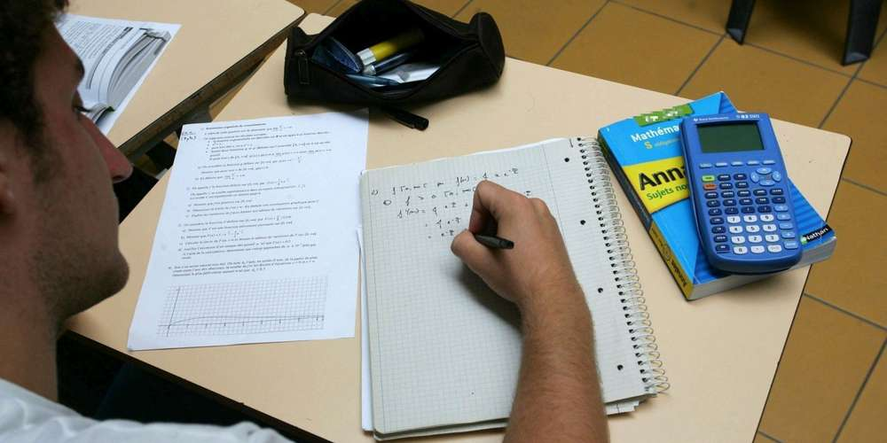
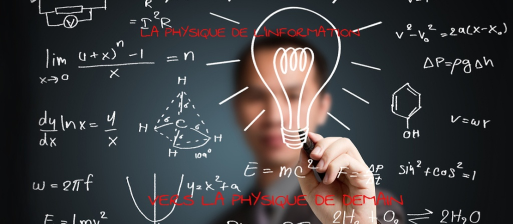

Bac Général aux Rimains
Le baccalauréat général au Rimains vise à faire et rendre accessible des progrès scientifiques dans l'innovation tout en cherchant des solutions pour répondre aux besoins
Les enseignements communs (16h première / 15h30 terminal)
Français en première / Philosophie en terminale ... 4h
Histoire-Géo .......................................................................... 3h
EMC ........................................................................................... 0h30
Langue vivante A/B ............................................................. 4h30(1ère) 4h(Term)
EPS ............................................................................................. 2h
Enseignement scientifique ............................................... 2h
Les enseignements spécialisés
Le lycée propose 4 options dont 2 fondamentales et 2 dites "rares"
 Science de l'ingénieur, spécialité étant un tremplin très intéressant pour accéder aux métiers à responsabilité dans le domaine de l'ingénierie/nouvelles technologies Les ingénieurs développent, imaginent et résolvent de manière performante et innovante des problèmes complexes de création, conception, réalisation etc...
Science de l'ingénieur, spécialité étant un tremplin très intéressant pour accéder aux métiers à responsabilité dans le domaine de l'ingénierie/nouvelles technologies Les ingénieurs développent, imaginent et résolvent de manière performante et innovante des problèmes complexes de création, conception, réalisation etc...
Il utilise a son avantage toutes les nouvelles sciences et technologies pour faire le produit le plus avancé. L'ingénieur a une approche de la science très précise avec la démarche scientifique reposant sur l'observation, la création d'hypothèses, la modélisation, la simulation et l'expérimentation matérielle ou virtuelle. Il doit avoir un sens critique développé pour prendre compte des conseils/critique obtenus.
 La spécialité Numérique et Sciences Informatiques est un choix vraiment pertinent pour les personnes aimant énormément le monde numérique et de l'informatique voulant travailler dans un monde en constante évolution numérique. Cette spécialité permet d'ainsi faire des écoles d'ingénieurs dans l'informatique pour décrocher les métiers de Cyber defender, ingénieurs informaticiens, Web masters etc...
La spécialité Numérique et Sciences Informatiques est un choix vraiment pertinent pour les personnes aimant énormément le monde numérique et de l'informatique voulant travailler dans un monde en constante évolution numérique. Cette spécialité permet d'ainsi faire des écoles d'ingénieurs dans l'informatique pour décrocher les métiers de Cyber defender, ingénieurs informaticiens, Web masters etc...
Il est dans l'obligation des élèves d'apprendre des concepts fondamentaux qui sont les piliers de l'informatique dans son fond scientifique et technique. Ces concepts-ci sont : Les données, les algorithmes, les langages et les machines et leurs systèmes d'exploitation.
Les mathématiques, fondamentales dans le domaine scientifique pour un bon cursus vont être dans le prolongement des cycles précédents, il y est travaillé 6 grandes compétences :
Chercher, à l’aide d’outils logiciels, Modéliser/faire une simulation, Représenter/choisir un cadre, Raisonner/démontrer, Calculer/mettre en œuvre des algorithmes et Communiquer/expliquer une démarche
La physique, seconde matière fondamentale dans le domaine scientifique, Il est davantage important de prendre cette option pour ouvrir des voies d'études supérieures diversifiées (sciences expérimentales, médecine, technologie, ingénierie, informatique, mathématiques…) La physique permet d'acquérir des modes de résonnement précis liés aux sciences tel que la mécanique, les forces, les calculs d'énergies etc. ... Cet enseignement est très important pour avoir des connaissances approfondies pour la suite des études dans l'ingénierie
Les spécialisations proposées sont à choisir en fonction des envies et de la classe
En première: 3 spécialitées à choisir 4H/semaine
En terminale: seulement 2 spécialitées à choisir 6H/semaine
Les enseignements optionnel en terminal
Les mathématiques expertes sont destinées aux élèves appréciant les mathématiques, le niveau sera plus élevé ce qui le permettra de viser des formations où les mathématiques occupent une place prépondérante.
Les mathématiques complémentaires sont une option de terminale destinés aux élèves qui abandonnent la spécialité maths en terminale mais qui ont tout de même besoin de maîtriser quelques bases de mathématiques pour leur poursuite d’études